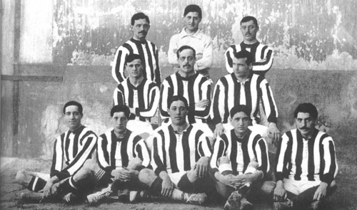
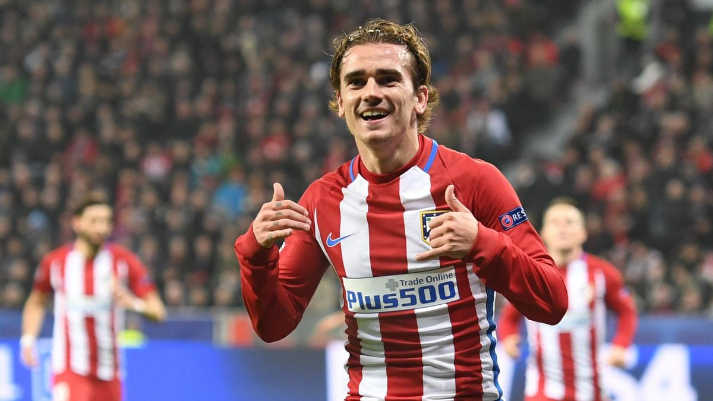

Como surgiu?
Fundação
O Club Atlético de Madrid, mais conhecido como Atlético de Madrid, e em países de língua espanhola como Atleti, é um clube de futebol profissional espanhol sediado na cidade de Madrid. Fundado em 26 de abril de 1903, manda seus jogos no Estadio Metropolitano desde 2017. Compete na La Liga, a principal divisão do sistema de ligas da Espanha. Foi fundado como Athletic Club de Madrid por estudantes bascos simpatizantes do Athletic Bilbao. A equipe da capital espanhola deixaria de ser uma filial em 1921, quando desvencilhou-se da equipe basca. Ainda assim, a similaridade dos uniformes, nomes e distintivos, originada em razão de como o clube madrilenho foi criado, manteve-se.
Os primeiros anos do Atlético de Madrid
O Atlético de Madrid passou os seus primeiros anos de clube de futebol profissional enquanto uma filial do time de Bilbao. Aos poucos, no entanto, foi se diferenciando. Primeiramente, com um apelido próprio: colchoneros, em função das cores alvirrubras da maioria dos colchões da época que se assemelhavam ao uniforme da equipe da capital.
Elenco de 1911
Na capital, o Atlético de Madrid dividia palco com o Real Madrid, o seu principal rival até os dias de hoje. No entanto, a divisão não era somente futebolística como, de certa forma, também política. Isso porque enquanto o Real era o clube apoiado pela realeza, o Atlético era uma equipe primordialmente querida por operários, os quais moravam próximos ao estádio do time.
Foi somente em 1921, quase duas décadas depois de ser fundado, que o Atlético de Madrid finalmente se desvencilhou da equipe de Bilbao e deixou de ser uma filial. A partir de então, passou a ter uma administração independente e, com isso, ações muito mais consolidadas – era finalmente um clube único, não dependente. Justamente nesse período, mais especificamente em 1923, que o Atlético de Madrid deu um grande passo enquanto clube de futebol. Ele mudou de estádio, passou a contar com uma casa nova, o Estádio Metropolitano de Madrid. Ainda viria a fazer essa mudança mais vezes, mas agora já era um time independente.
Primeiros títulos do clube
Os primeiros títulos do Atlético de Madrid vieram nos anos 1920. Essa foi uma década marcada por altos e baixos pela equipe colchonera, a qual viveu uma ascensão e queda muito rápida, quase uma em seguida da outra. Ainda assim, conseguiu levar alguns vários títulos para casa. O primeiro título do Atlético foi o Campeonato de Madrid, na temporada 1920-21. Naquela década, a equipe ainda viria a ganhar a competição mais duas vezes, em 1924-25 e 1927-28. Nesse meio tempo, em 1926, o clube foi vice-campeão da tradicional Copa do Rei, o que fez com que conseguisse vaga na primeira edição do Campeonato Espanhol, já na temporada 1928-29.
O clube, no entanto, acabou sendo rebaixado logo na sua segunda temporada disputando o nacional – o que voltaria a acontecer em 1936, dois anos depois de retornar à elite. Nesse período, no entanto, a equipe ficou meio apagada em termos de títulos. Em resumo, os anos 1930 foram ainda mais complicados para os colchoneros, que voltaram a ascender ao fim daquela década.
Depois de anos sem títulos oficiais, o Atlético de Madrid voltou a levar um título para casa na temporada 1939-40. Nesse ano, conquistou mais uma vez o Campeonato de Madrid e, pela primeira vez em sua história, foi campeão do Campeonato Espanhol. Desde então, a equipe se tornou uma das maiores do mundo.
Ídolos do Atleti
Diego Simeone
Dados
- Partidas: 145
- Gols: 28
Títulos*
- Campeonato Espanhol (1998/1996)
- Copa do Rei (1995/1996)
Luis Aragonés
Dados
- Partidas: 255
- Gols: 73
Títulos*
- Campeonato Espanhol (1965/1966)
- Campeonato Espanhol (1969/1970)
- Campeonato Espanhol (1972/1973)
- Copa do Rei (1964/1965)
- Copa do Rei (1971/1972)
Antoine Griezmann
Dados
- Partidas: 355
- Gols: 191 (até o momento)
Títulos*
- Supercopa da Espanha 2014
- Liga Europa da UEFA (2017/2018)
- Supercopa da UEFA (2018)
*Como jogador do clube